China Employee Termination: Control-Tower Shift Brief for Foreign Employers (Hourly Testing Run)
Key takeaways
- Foreign employers often lose termination control during handoffs between HR, legal, payroll, and management—not during initial legal review.
- A control-tower shift model improves outcomes by forcing clean handoff packets and explicit owner transfer points.
- China route legality is foundational, but case resilience depends on evidence, communication, and settlement continuity across shifts.
- Pulse-style shift briefs are easier for non-China leadership to monitor than long static memos.
- Legal depth should stay as appendix support while operational control remains the lead narrative.
Pulse lead
This run uses a control-tower shift format: think of each termination case as a high-risk operation moving across teams. The key risk is handoff drift—where one team assumes another has validated facts, scripts, or payout logic. For foreign clients, this structure offers fast situational awareness: what changed, who owns it now, and what blocks execution.
Plain-language legal context first
China’s Labor Contract Law defines route boundaries and severance obligations. State Council implementation regulations and the SPC interpretation shape dispute review around documentary coherence, procedural fairness, and consistency. In practical terms for foreign employers: route validity must remain synchronized with process behavior from intake to closure. If handoffs break that synchronization, legal risk increases even when route labels appear acceptable.
Control-tower shift map (where risk concentrates)
Shift 1: Intake to legal framing
Risk: facts are captured broadly but route conditions are not made explicit.
Control: intake packet must include route assumptions, known gaps, and protected-status checks.
Shift 2: Legal framing to evidence validation
Risk: legal theory approved before chronology quality is tested.
Control: evidence confidence score and unresolved-gap log required before route lock.
Shift 3: Evidence validation to manager communication
Risk: communication script does not fully match route/evidence boundaries.
Control: one approved script version + mandatory manager briefing confirmation.
Shift 4: Communication to settlement/payout execution
Risk: settlement language and payroll calculation logic diverge late.
Control: legal/payroll co-signed worksheet, timing plan, and tax assumption note.
Shift 5: Execution to closure
Risk: signature treated as completion while payment proof and archive controls lag.
Control: closure requires signature + payment evidence + archive completeness.
Practical implications for foreign employers
- HQ leadership: ask for shift status and unresolved handoff risks, not only route summary.
- Regional HR: track handoff integrity as a KPI, not just dispute count.
- Payroll/finance: treat Shift 4 as a co-owned control gate, not a back-office task.
- Managers: communication obligations are compliance controls with measurable impact.
Shift handoff packet template (recommended)
Each shift should transfer a short packet:
- what is confirmed
- what is uncertain
- what changed since prior shift
- owner and SLA for unresolved items
- stop/go condition for next shift
This keeps cross-border teams aligned despite time zones and reporting lines.
Scenario snapshots
Scenario A: Shift 2 catches chronology weakness
Legal route looked available, but evidence validation flagged chronology inconsistency. Handoff blocked until remediation completed. Outcome: delayed execution, reduced contestability risk.
Scenario B: Shift 4 prevents payout friction
Communication phase completed, but settlement worksheet had ambiguous component mapping. Payroll/legal relocked file before payment commitment. Outcome: cleaner closure and fewer reopen questions.
Scenario C: Shift 5 closure discipline
Case was signed but payment proof was incomplete. Control-tower held closure status until reconciliation finished. Outcome: stronger audit trail and lower post-close noise.
Daily operations SOP (shift-governed)
- Open case with Shift 1 intake packet.
- Run Shift 2 evidence validation and gap scoring.
- Approve Shift 3 communication controls and manager readiness.
- Complete Shift 4 settlement/payroll/tax coherence checks.
- Execute actions with real-time exception logging.
- Apply Shift 5 closure checklist and evidence archive checks.
- Publish weekly shift-risk dashboard for leadership.
Required document checklist
- Intake packet with route assumptions
- Evidence index and chronology map
- Communication script + briefing evidence
- Settlement worksheet + tax note
- Escalation owner matrix
- Shift handoff logs (1-5)
- Meeting records and exception notes
- Payment proof + reconciliation pack
- Closure audit report
Exception handling playbook
- Unresolved handoff blocker: automatic hold and escalation.
- Manager script deviation: corrected written summary + legal review note.
- Settlement logic change: relock worksheet and rerun Shift 4 approvals.
- Authority gap near execution: assign backup decision owner before proceeding.
- Local variance detected: add city-level overlay while preserving core controls.
System implementation notes
Add control-tower fields to workflow tools:
- shift ID/status
- handoff completeness score
- unresolved blocker count + owner
- script version and acknowledgment timestamp
- settlement lock version + payroll verifier
- closure completeness score
Control rules:
- hard stop if a shift handoff packet is incomplete
- re-approval required for route/script/settlement changes
- immutable logs for handoff evidence
- weekly dashboard for repeat shift-failure patterns
Common mistakes and prevention
- Mistake: Route approved without handoff readiness.
Prevention: shift packets required before progression.
- Mistake: Payroll engaged too late in shift chain.
Prevention: formal co-ownership at Shift 4.
- Mistake: Closing on signature only.
Prevention: enforce three-part closure evidence.
- Mistake: Global process ignores local variance.
Prevention: local overlays on top of central baseline.
What to do now
- Pilot shift-handoff governance on three active cases.
- Define mandatory packet fields for each shift.
- Set blocker thresholds that force auto-hold.
- Train managers on script-control obligations.
- Build weekly shift-risk dashboard with aging metrics.
- Recalibrate local overlays quarterly with counsel.
What to watch next
- Continued scrutiny of process coherence in disputes.
- Persistent sensitivity around payout clarity and explanation quality.
- Ongoing local practice variation requiring control recalibration.
FAQ
Is shift-governance legally mandatory in China?
No. It is an operational governance model to improve defensibility and execution quality.
Can smaller teams run this model?
Yes. Start with three shifts (intake, communication, closure) and scale to five.
Why focus on handoffs?
Because most cross-functional failures occur at transfer points, not within single functions.
Is negotiated separation always safer?
Often lower friction, but still vulnerable to weak handoff controls.
When should external PRC counsel be mandatory?
High-risk unilateral routes, protected-status concerns, restructuring, and multi-city complexity.
Legal depth appendix
This brief is anchored in the PRC Labor Contract Law, State Council implementation regulations, and SPC labor-dispute interpretation. Together they support a practical standard for foreign employers: route legality, procedural fairness, and documentary reliability should remain coherent throughout execution and closure.
Disclaimer
This article is informational only and does not constitute legal, tax, or employment advice. Seek qualified PRC legal and tax advice for specific situations.
Sources
- National People’s Congress — Labor Contract Law of the PRC (English), 2007-12-13: http://www.npc.gov.cn/zgrdw/englishnpc/Law/2007-12/13/content_1384064.htm
- State Council — Implementation Regulations of the Labor Contract Law (Decree No. 535), 2008-09-18: https://www.gov.cn/gongbao/content/2008/content_1124615.htm
- Supreme People’s Court — Interpretation on Labor Dispute Application Issues (Fa Shi [2020] No. 26), 2020-12-29: https://www.court.gov.cn/fabu/xiangqing/243981.html
- China Briefing / Dezan Shira — Employee Termination in China, 2025-10-17: https://www.china-briefing.com/news/employee-termination-in-china/
- Littler — Key Recent Developments in China’s Employment Law, 2024-03-20: https://www.littler.com/news-analysis/asap/key-recent-developments-chinas-employment-law-china-us-comparative-perspective
- PwC Worldwide Tax Summaries — PRC Individual Taxes on Personal Income, 2025-01-15: https://taxsummaries.pwc.com/peoples-republic-of-china/individual/taxes-on-personal-income
Need local employment support in China?
If you need a compliance-first partner for hiring, payroll, and risk controls in China, China-Payroll.com can help evaluate the right setup.
Image Prompt Pack
Create a 16:9 hero image for article title: 'China Employee Termination: Control-Tower Shift Brief for Foreign Employers (Hourly Testing Run)'. Scene: global operations team evaluating workforce model options for China market entry. Include motifs: decision ma…